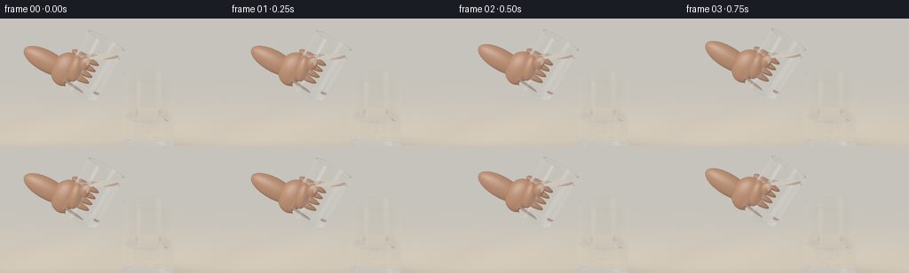
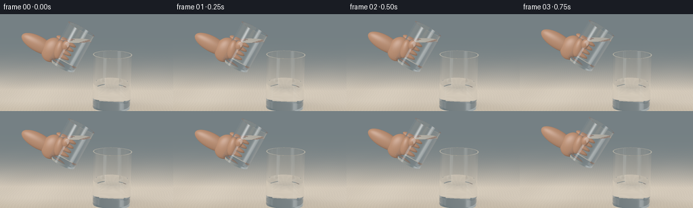
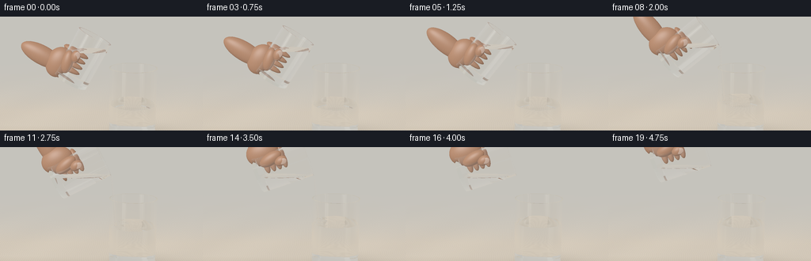
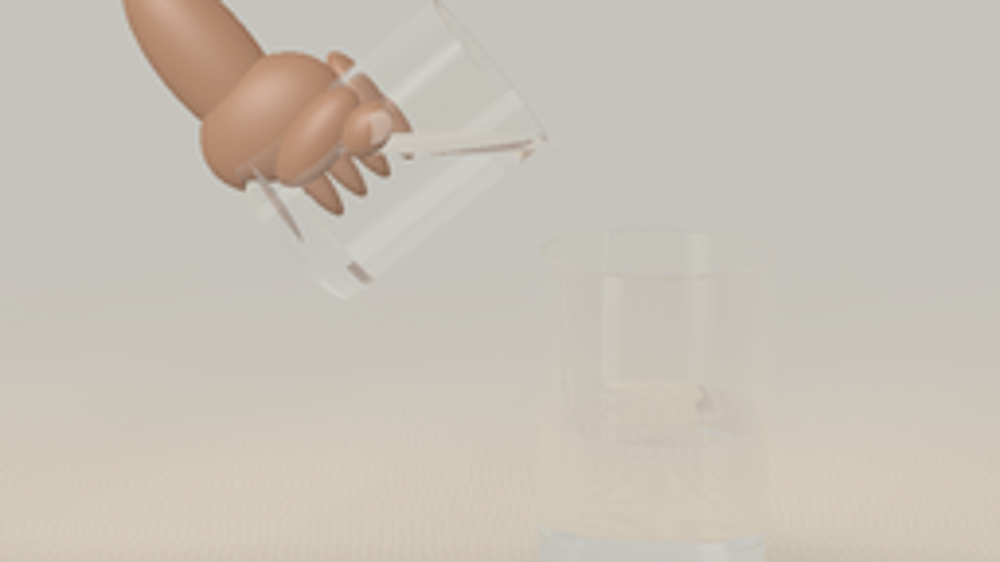
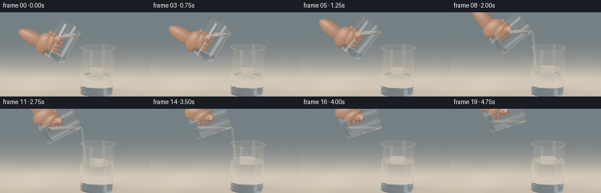
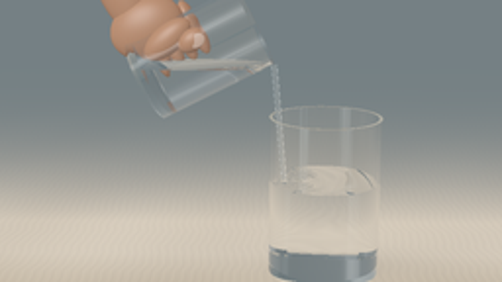

CODING AGENTS AS PIXEL WORLD MODELS
traex/GPT-6.1-Sol · phygen_138
点击播放 · 原生 RGB 像素
逐轮保存的候选
回放视频、检查图与代码变化。
每份候选均可单独播放。实际图片检查记录在下方工具轨迹中。
候选 01播放与检查图
点击播放 · 原生 RGB 像素


展开代码变化
--- 上一保存版本
+++ 本次保存版本
@@ -0,0 +1,367 @@
+"""Procedural optical rendering of two tumblers and a gentle clear-liquid pour.
+No assets, models, or rendering libraries: ray/geometry optics implemented with numpy.
+"""
+from pathlib import Path
+import math
+import numpy as np
+from PIL import Image
+import artifact_io
+
+ROOT = Path(__file__).resolve().parent
+W,H=256,144
+SS=3
+RW,RH=W*SS,H*SS
+EPS=2.e-5
+INF=1.e8
+
+def unit(a):
+ return a / np.maximum(np.linalg.norm(a,axis=-1,keepdims=True),1e-15)
+
+def smooth(a):
+ a=np.clip(a,0,1); return a*a*(3-2*a)
+
+def rotation(th):
+ c,s=np.cos(th),np.sin(th)
+ return np.array([[c,s,0],[-s,c,0],[0,0,1.]])
+
+class Glass:
+ def __init__(self,b,R,height,theta,level,kind='source',time=0,flow=0):
+ self.b=np.array(b);self.rot=rotation(theta)
+ self.R=R;self.ri=R-.026;self.h=height;self.base=.061
+ self.level=level;self.kind=kind;self.time=time;self.flow=flow
+ self.impact=np.array([.15,0.035])
+ def local(self,p):return (p-self.b)@self.rot
+ def material(self,p):
+ q=self.local(p);rr=q[:,0]**2+q[:,2]**2
+ inside=(rr<self.R**2)&(q[:,1]>0)&(q[:,1]<self.h)
+ wall=(rr>=self.ri**2)|(q[:,1]<self.base)
+ fy=self.surface(p)[0] if self.kind=='target' else self.level
+ wet=p[:,1]<fy
+ return np.where(inside,np.where(wall,1,np.where(wet,2,0)),0)
+ def surface(self,p):
+ if self.kind!='target':
+ return np.full(len(p),self.level),np.tile([0.,1.,0.],(len(p),1))
+ dx=p[:,0]-self.impact[0]; dz=p[:,2]-self.impact[1]
+ rr=np.sqrt(dx*dx+dz*dz+1.e-7)
+ amp=.006*self.flow + .0005
+ phase=43*rr-12*self.time
+ env=np.exp(-4.1*rr)
+ waves=amp*np.sin(phase)*env
+ dent=-.007*self.flow*np.exp(-rr**2/.0025)
+ y=self.level+waves+dent
+ deriv=amp*env*(43*np.cos(phase)-4.1*np.sin(phase))+ .014*self.flow*rr/.0025*np.exp(-rr**2/.0025)
+ n=unit(np.stack([-deriv*dx/rr,np.ones(len(p)),-deriv*dz/rr],axis=1))
+ return y,n
+ def intersect(self,o,d):
+ q=self.local(o);v=d@self.rot
+ N=len(o);best=np.full(N,INF);normal=np.zeros((N,3));after=np.zeros(N,int)
+ def candidate(t,n,valid):
+ nonlocal best,normal,after
+ good=valid&(t>EPS)&(t<best)&np.isfinite(t)
+ ids=np.flatnonzero(good)
+ if len(ids)==0:return
+ p=o[ids]+d[ids]*t[ids,None]
+ ma=self.material(p+d[ids]*EPS*3)
+ mb=self.material(p-d[ids]*EPS*3)
+ ids2=ids[ma!=mb]
+ if len(ids2)==0:return
+ best[ids2]=t[ids2];normal[ids2]=n[ids2];after[ids2]=ma[ma!=mb]
+ a=v[:,0]**2+v[:,2]**2
+ b=2*(q[:,0]*v[:,0]+q[:,2]*v[:,2])
+ for rad in [self.R,self.ri]:
+ cc=q[:,0]**2+q[:,2]**2-rad*rad
+ disc=b*b-4*a*cc
+ root=np.sqrt(np.maximum(disc,0))
+ for sign in [-1,1]:
+ t=(-b+sign*root)/(2*np.maximum(a,1e-15))
+ hit=q+v*t[:,None]
+ nl=unit(np.stack([hit[:,0],np.zeros(N),hit[:,2]],axis=1))
+ n=nl@self.rot.T
+ valid=(disc>=0)&(hit[:,1]>=0)&(hit[:,1]<=self.h)
+ candidate(t,n,valid)
+ for yy in [0,self.base,self.h]:
+ t=(yy-q[:,1])/np.where(abs(v[:,1])>1e-12,v[:,1],1e-12)
+ hit=q+v*t[:,None]
+ n=np.broadcast_to(self.rot[:,1],(N,3))
+ candidate(t,n,(hit[:,0]**2+hit[:,2]**2<=self.R**2))
+ t=(self.level-o[:,1])/np.where(abs(d[:,1])>1.e-12,d[:,1],1e-12)
+ if self.kind=='target':
+ for _ in range(2):
+ p=o+d*t[:,None];yy,n=self.surface(p)
+ t=t+(yy-p[:,1])/np.where(abs(d[:,1])>1e-12,d[:,1],1e-12)
+ p=o+d*t[:,None]; _,n=self.surface(p)
+ else:n=np.broadcast_to(np.array([0.,1.,0.]),(N,3))
+ hit=q+v*t[:,None]
+ candidate(t,n,(hit[:,0]**2+hit[:,2]**2<self.ri**2)&(hit[:,1]>self.base)&(hit[:,1]<self.h))
+ return best,normal,after
+
+class Stream:
+ def __init__(self,top,bottom,r1,r2):
+ self.top=np.array(top);self.bottom=np.array(bottom)
+ self.axis=unit(self.bottom-self.top);self.length=np.linalg.norm(self.bottom-self.top)
+ self.r1=r1;self.slope=(r2-r1)/self.length
+ def material(self,p):
+ q=p-self.top;s=q@self.axis;v=q-s[:,None]*self.axis
+ return np.where((s>0)&(s<self.length)&(np.sum(v*v,axis=1)<(self.r1+self.slope*s)**2),2,0)
+ def intersect(self,o,d):
+ q=o-self.top;s=q@self.axis;dv=d@self.axis
+ qp=q-s[:,None]*self.axis;dp=d-dv[:,None]*self.axis
+ a=np.sum(dp*dp,axis=1)-(self.slope*dv)**2
+ b=2*(np.sum(qp*dp,axis=1)-(self.r1+self.slope*s)*self.slope*dv)
+ c=np.sum(qp*qp,axis=1)-(self.r1+self.slope*s)**2
+ disc=b*b-4*a*c
+ best=np.full(len(o),INF);norm=np.zeros_like(o);mat=np.zeros(len(o),int)
+ for sign in [-1,1]:
+ t=(-b+sign*np.sqrt(np.maximum(disc,0)))/(2*np.where(abs(a)>1e-12,a,1e-12))
+ ss=s+t*dv
+ good=(disc>=0)&(t>EPS)&(t<best)&(ss>=0)&(ss<=self.length)
+ ids=np.flatnonzero(good)
+ if not len(ids):continue
+ p=o[ids]+d[ids]*t[ids,None]
+ n=unit(p-self.top-ss[ids,None]*self.axis-(self.slope*(self.r1+self.slope*ss[ids]))[:,None]*self.axis)
+ best[ids]=t[ids];norm[ids]=n
+ mat[ids]=self.material(p+d[ids]*EPS*3)
+ return best,norm,mat
+
+class Ellipsoid:
+ def __init__(self,center,radii,rot,mat=3):
+ self.center=np.array(center);self.radii=np.array(radii);self.rot=rot;self.mat=mat
+ def intersect(self,o,d):
+ q=((o-self.center)@self.rot)/self.radii
+ v=(d@self.rot)/self.radii
+ a=np.sum(v*v,axis=1);b=np.sum(q*v,axis=1);c=np.sum(q*q,axis=1)-1
+ dd=b*b-a*c;t=(-b-np.sqrt(np.maximum(dd,0)))/a
+ valid=(dd>0)&(t>EPS)
+ p=q+v*t[:,None]
+ n=unit((p/self.radii)@self.rot.T)
+ return np.where(valid,t,INF),n,np.full(len(o),self.mat)
+
+# Coordinate system: y up; front of scene is positive z.
+cam=np.array([0.04,2.48,5.8]);aim=np.array([-.08,1.12,0.])
+forward=unit(aim-cam);right=unit(np.cross(forward,[0,1,0]));up=np.cross(right,forward)
+y,x=np.mgrid[0:RH,0:RW]
+plane_x=((x+.5)/RW-.5)*3.24
+plane_y=(.5-(y+.5)/RH)*3.24*H/W
+rays=unit(forward*5.3+plane_x[...,None]*right+plane_y[...,None]*up).reshape(-1,3)
+orig=np.broadcast_to(cam,rays.shape).copy()
+
+# Reusable deterministic uniform volume quadrature for the tilted source liquid.
+qys=(np.arange(76)+.5)/76*(.91-.061)+.061
+qr=(np.arange(42)+.5)/42
+qa=(np.arange(96)+.5)/96*2*np.pi
+rad=np.sqrt(qr)*(.32-.026)
+qx=(rad[:,None]*np.cos(qa)).reshape(-1)
+qz=(rad[:,None]*np.sin(qa)).reshape(-1)
+volume_cloud=np.column_stack([np.tile(qx,len(qys)),np.repeat(qys,len(qx)),np.tile(qz,len(qys))])
+source_capacity=np.pi*(.32-.026)**2*(.91-.061)
+initial_volume=source_capacity*.66
+
+
+def environment(d):
+ # A softly illuminated photographic room with two large off-camera windows.
+ dy=d[:,1];dz=d[:,2];dx=d[:,0]
+ warm=np.array([.69,.65,.57]);top=np.array([.83,.83,.80])
+ f=np.clip((dy+.4)/1.3,0,1)
+ col=warm+(top-warm)*f[:,None]
+ col*= (.83+.12*np.cos(1.3*dx-0.3))[:,None]
+ # Reflections of tall rectangular soft boxes, whose soft edges remain in glass.
+ zz=np.maximum(dz,.07)
+ xx=dx/zz; yy=dy/zz
+ def panel(cx,cy,wx,wy):
+ return np.exp(-((xx-cx)/wx)**8-((yy-cy)/wy)**8)*(dz>0)
+ p=panel(-.93,.48,.26,.78)
+ p2=panel(.86,.48,.105,.83)
+ col+=p[:,None]*np.array([1.9,1.92,1.88])+p2[:,None]*np.array([.96,1.01,1.03])
+ # Low dark camera-side region adds contrast in rim reflections.
+ dark=np.exp(-((xx-.02)/.34)**6-((yy+.12)/.29)**6)*(dz>0)
+ col*=1-.52*dark[:,None]
+ return col
+
+def table_color(p,time=0):
+ xx=p[:,0];zz=p[:,2]
+ # Small-scale continuous analytic oak grain, no texture maps.
+ warp=xx+.008*np.sin(8*zz+2*np.sin(3*xx))+.006*np.sin(24*zz)
+ grain=np.sin(150*warp+1.4*np.sin(10*zz))+ .46*np.sin(310*warp+.7*np.cos(7*zz))
+ fine=np.sin(1800*warp+6*np.sin(13*zz))*np.sin(140*zz)
+ variation=.017*grain+.003*fine+.016*np.sin(2.8*xx+1.5*zz)
+ color=np.array([.63,.535,.407])+variation[:,None]*np.array([1.,.88,.65])
+ # Delicate distant grain and a light wall reflected on the finish.
+ color+=np.clip((-zz+.5)/5,0,.16)[:,None]
+ center=np.array([.49,.035])
+ r=((xx-center[0])/.46)**2+((zz-center[1])/.33)**2
+ contact=np.exp(-2.2*r)*.28
+ cast=np.exp(-((xx-.75)/.62)**2-((zz+.17)/.32)**2)*.13
+ color*=1-contact[:,None]-cast[:,None]
+ # Broad and narrow transmitted caustics under the water glass.
+ rr=np.sqrt((xx-.5)**2+((zz-.05)*1.25)**2)
+ caustic=.070*np.exp(-((rr-.35)/.035)**2)+.11*np.exp(-((xx-.73)/.12)**2-((zz+.1)/.2)**2)
+ color+=caustic[:,None]*np.array([1.03,1.05,1.0])
+ return color
+
+def backdrop(o,d):
+ dist=(-.014-o[:,1])/np.where(abs(d[:,1])>1e-10,d[:,1],1e-10)
+ valid=(dist>0)&(d[:,1]<0)
+ col=environment(d)
+ ids=np.flatnonzero(valid)
+ if len(ids):
+ p=o[ids]+d[ids]*dist[ids,None]
+ floor=table_color(p)
+ # Atmosphere/focus: smooth transition to an indistinct warm background.
+ f=np.exp(-np.maximum(-p[:,2]-1.1,0)*.65)
+ wall=np.tile(np.array([.66,.64,.585]),(len(ids),1))
+ col[ids]=floor*f[:,None]+wall*(1-f[:,None])
+ # Room wall for upwards rays, subtly brighter at the window side.
+ ids=np.flatnonzero(~valid)
+ if len(ids):
+ dd=d[ids]
+ col[ids]=np.array([.67,.65,.60])+.045*dd[:,1,None]-.04*dd[:,0,None]
+ return col
+
+
+def skin_shade(p,n,d,mat):
+ light=unit(np.array([-.65,1.0,1.5]))
+ nd=np.clip(n@light,0,1)
+ base=np.array([.58,.31,.19])
+ warmth=np.clip(n@unit(np.array([.8,.4,-1.])),0,1)
+ diffuse=.42+.63*nd
+ skin=base*diffuse[:,None]+warmth[:,None]*np.array([.10,.026,.011])
+ half=unit(light-d)
+ spec=np.clip(np.sum(n*half,axis=1),0,1)**30*.17
+ skin+=spec[:,None]
+ texture=.007*np.sin(230*p[:,0]+20*np.sin(70*p[:,1]))*np.sin(220*p[:,2])
+ skin+=texture[:,None]
+ nail=(mat==4)
+ if np.any(nail):skin[nail]=np.array([.66,.46,.36])*(.58+.5*nd[nail,None])+spec[nail,None]*.6
+ return skin
+
+
+def render(objects):
+ N=len(rays);o=orig.copy();d=rays.copy()
+ color=np.zeros((N,3));weight=np.ones((N,3));medium=np.zeros(N,int)
+ active=np.arange(N)
+ iors=np.array([1.,1.505,1.333,1.,1.])
+ for bounce in range(16):
+ if not len(active):break
+ ao=o[active];ad=d[active];n=len(active)
+ dist=np.full(n,INF);norm=np.zeros((n,3));after=np.zeros(n,int);objid=np.full(n,-1,int)
+ for idx,obj in enumerate(objects):
+ tt,nn,mm=obj.intersect(ao,ad)
+ sel=tt<dist
+ dist[sel]=tt[sel];norm[sel]=nn[sel];after[sel]=mm[sel];objid[sel]=idx
+ hit=dist<INF*.5
+ escaped=active[~hit]
+ if len(escaped):color[escaped]+=weight[escaped]*backdrop(o[escaped],d[escaped])
+ local=np.flatnonzero(hit);ids=active[hit]
+ if not len(ids):break
+ p=ao[local]+ad[local]*dist[local,None];nn=norm[local];dire=ad[local]
+ ma=after[local];mat0=medium[ids]
+ # Beer-Lambert attenuation through clear water and very slightly green glass.
+ absorb=np.zeros((len(ids),3))
+ absorb[mat0==1]=[.045,.012,.021]
+ absorb[mat0==2]=[.012,.008,.006]
+ weight[ids]*=np.exp(-absorb*dist[local,None])
+ opaque=ma>=3
+ if np.any(opaque):
+ ii=ids[opaque]
+ color[ii]+=weight[ii]*skin_shade(p[opaque],nn[opaque],dire[opaque],ma[opaque])
+ transparent=~opaque
+ ids=ids[transparent];p=p[transparent];nn=nn[transparent];dire=dire[transparent];ma=ma[transparent];mat0=mat0[transparent]
+ if len(ids)==0:break
+ cosine=-np.sum(nn*dire,axis=1)
+ nn[cosine<0]*=-1
+ cosine=np.abs(cosine)
+ n1=iors[mat0];n2=iors[ma];eta=n1/n2
+ k=1-eta*eta*(1-cosine*cosine)
+ f0=((n1-n2)/(n1+n2))**2
+ fres=f0+(1-f0)*(1-cosine)**5
+ reflected=unit(dire+2*cosine[:,None]*nn)
+ # Smooth reflection of the actual environment; ray transmission continues.
+ reflected_color=backdrop(p+nn*EPS*4,reflected)
+ # Off-camera windows contribute strong slender highlights to cylindrical walls.
+ sky=environment(reflected)
+ reflected_color+=np.maximum(sky-.8,0)*.85
+ tir=k<0
+ # Follow internal reflection instead of losing rays at the liquid's critical angle.
+ color[ids[~tir]]+=weight[ids[~tir]]*fres[~tir,None]*reflected_color[~tir]
+ weight[ids[~tir]]*=1-fres[~tir,None]
+ transmitted=unit(eta[:,None]*dire+(eta*cosine-np.sqrt(np.maximum(k,0)))[:,None]*nn)
+ nd=np.where(tir[:,None],reflected,transmitted)
+ o[ids]=p+nd*EPS*5;d[ids]=nd
+ medium[ids]=np.where(tir,mat0,ma)
+ live=np.max(weight[ids],axis=1)>.009
+ active=ids[live]
+ if len(active):color[active]+=weight[active]*backdrop(o[active],d[active])
+ # Gentle photographic tone response; scene values above one make white glints.
+ col=np.clip(color,0,None)
+ col=col/(1+col*.24)
+ col=np.clip(col,0,1)**(1/2.2)
+ img=(col.reshape(RH,RW,3)*255).astype(np.uint8)
+ return np.array(Image.fromarray(img).resize((W,H),Image.Resampling.LANCZOS))
+
+
+def scene(t):
+ # The mouth gradually tips towards the receiving tumbler, with a still free surface.
+ th=np.deg2rad(29+43*smooth((t-.15)/3.65))
+ # Stable lowest lip, with minute natural movement instead of camera motion.
+ retreat=smooth((t-4.0)/.75)
+ lip=np.array([.09-.14*retreat,1.64+.16*retreat,.025])
+ R=.32;hh=.91
+ rot=rotation(th)
+ mouth=lip-rot@np.array([R,0,0])
+ bottom=mouth-rot@np.array([0,hh,0])
+ cloud=volume_cloud@rot.T+bottom
+ ys=cloud[:,1]
+ desired=np.quantile(ys,.66)
+ fluidlevel=min(desired,lip[1]-.004)
+ retained=np.mean(ys<fluidlevel)*source_capacity
+ transferred=max(0,initial_volume-retained)
+ target_level=.57+transferred/(np.pi*(.43-.026)**2)
+ # Flow rate proportional to angle-induced loss, never spurts or foams.
+ tt=t+.055
+ th2=np.deg2rad(29+43*smooth((tt-.15)/3.65))
+ b2=lip-rotation(th2)@np.array([R,hh,0])
+ ys2=(volume_cloud@rotation(th2).T+b2)[:,1]
+ v2=np.mean(ys2<lip[1]-.004)*source_capacity
+ rate=max(0,(retained-v2)/.055) if desired>=lip[1]-.004 else 0
+ flow=np.clip(rate/.038,0,1)
+ source=Glass(bottom,R,hh,th,fluidlevel,time=t)
+ target=Glass([.49,0,0],.43,1.23,0,target_level,kind='target',time=t,flow=flow)
+ objects=[source,target]
+ if flow>.018 and t<4.0:
+ r=.009+.013*np.sqrt(flow)
+ # The narrow clear stream leaves the lowered rim and falls into the water.
+ impact=np.array([lip[0]+.092, target_level-.026,lip[2]+.010])
+ target.impact=np.array([impact[0],impact[2]])
+ streamtop=lip+np.array([.003,-.004,0])
+ objects.append(Stream(streamtop,impact,r,r*.78))
+ # A tiny moving bead at the impact, not a large splash.
+ rr=rotation(0.)
+ objects.append(Ellipsoid(impact+[0,.022,0],[.028,.023,.023],rr,2))
+ # Hand supports the lower half of the tilted glass; wrist exits the left edge.
+ def hand(c,r,mat=3,twist=0):
+ obj=Ellipsoid(bottom+rot@np.array(c),r,rot@rotation(twist),mat)
+ objects.append(obj)
+ hand([-.34,.19,-.005],[.225,.285,.145])
+ hand([-.66,.15,-.035],[.41,.175,.128])
+ # Rounded fingers wrap behind the glass, with soft overlapping joints.
+ for j in range(4):
+ fy=.14+j*.112
+ hand([-.245,fy,-.18],[.16,.059,.105])
+ hand([-.095,fy,-.277],[.15,.056,.069])
+ # The front thumb curves upwards along the cool clear surface.
+ hand([-.205,.32,.205],[.106,.205,.092],twist=-.24)
+ hand([-.124,.477,.254],[.08,.107,.067],twist=-.24)
+ hand([-.11,.517,.307],[.048,.062,.012],4,twist=-.24)
+ return objects
+
+
+def main():
+ frames=[]
+ for i in range(20):
+ print(f'Rendering {i+1}/20',flush=True)
+ frame=render(scene(i/4))
+ frames.append(frame)
+ artifact_io.save(np.stack(frames),ROOT)
+ print('Saved RGB video artifacts',flush=True)
+
+if __name__=='__main__':main()
候选 02播放与检查图
点击播放 · 原生 RGB 像素


展开代码变化
--- 上一保存版本
+++ 本次保存版本
@@ -137,11 +137,11 @@
return np.where(valid,t,INF),n,np.full(len(o),self.mat)
# Coordinate system: y up; front of scene is positive z.
-cam=np.array([0.04,2.48,5.8]);aim=np.array([-.08,1.12,0.])
+cam=np.array([0.04,2.48,5.8]);aim=np.array([-.08,1.04,0.])
forward=unit(aim-cam);right=unit(np.cross(forward,[0,1,0]));up=np.cross(right,forward)
y,x=np.mgrid[0:RH,0:RW]
-plane_x=((x+.5)/RW-.5)*3.24
-plane_y=(.5-(y+.5)/RH)*3.24*H/W
+plane_x=((x+.5)/RW-.5)*3.42
+plane_y=(.5-(y+.5)/RH)*3.42*H/W
rays=unit(forward*5.3+plane_x[...,None]*right+plane_y[...,None]*up).reshape(-1,3)
orig=np.broadcast_to(cam,rays.shape).copy()
@@ -160,7 +160,7 @@
def environment(d):
# A softly illuminated photographic room with two large off-camera windows.
dy=d[:,1];dz=d[:,2];dx=d[:,0]
- warm=np.array([.69,.65,.57]);top=np.array([.83,.83,.80])
+ warm=np.array([.19,.23,.24]);top=np.array([.39,.43,.44])
f=np.clip((dy+.4)/1.3,0,1)
col=warm+(top-warm)*f[:,None]
col*= (.83+.12*np.cos(1.3*dx-0.3))[:,None]
@@ -181,8 +181,8 @@
xx=p[:,0];zz=p[:,2]
# Small-scale continuous analytic oak grain, no texture maps.
warp=xx+.008*np.sin(8*zz+2*np.sin(3*xx))+.006*np.sin(24*zz)
- grain=np.sin(150*warp+1.4*np.sin(10*zz))+ .46*np.sin(310*warp+.7*np.cos(7*zz))
- fine=np.sin(1800*warp+6*np.sin(13*zz))*np.sin(140*zz)
+ grain=np.sin(90*warp+1.4*np.sin(10*zz))+ .46*np.sin(170*warp+.7*np.cos(7*zz))
+ fine=np.sin(500*warp+6*np.sin(13*zz))*np.sin(70*zz)
variation=.017*grain+.003*fine+.016*np.sin(2.8*xx+1.5*zz)
color=np.array([.63,.535,.407])+variation[:,None]*np.array([1.,.88,.65])
# Delicate distant grain and a light wall reflected on the finish.
@@ -206,15 +206,16 @@
if len(ids):
p=o[ids]+d[ids]*dist[ids,None]
floor=table_color(p)
+ floor+=.008*np.sin(3.5*p[:,0,None])
# Atmosphere/focus: smooth transition to an indistinct warm background.
f=np.exp(-np.maximum(-p[:,2]-1.1,0)*.65)
- wall=np.tile(np.array([.66,.64,.585]),(len(ids),1))
+ wall=np.tile(np.array([.19,.235,.25]),(len(ids),1))
col[ids]=floor*f[:,None]+wall*(1-f[:,None])
# Room wall for upwards rays, subtly brighter at the window side.
ids=np.flatnonzero(~valid)
if len(ids):
dd=d[ids]
- col[ids]=np.array([.67,.65,.60])+.045*dd[:,1,None]-.04*dd[:,0,None]
+ col[ids]=np.array([.17,.215,.235])+.035*dd[:,1,None]-.065*dd[:,0,None]
return col
@@ -279,11 +280,23 @@
reflected_color=backdrop(p+nn*EPS*4,reflected)
# Off-camera windows contribute strong slender highlights to cylindrical walls.
sky=environment(reflected)
- reflected_color+=np.maximum(sky-.8,0)*.85
+ reflected_color+=np.maximum(sky-.45,0)*1.35
+ # Additional finite-area studio lights, evaluated analytically in direction space.
+ for lightdir,power,sharpness in [([-.64,.18,.75],3.8,95),([.76,.31,.58],3.,170),([-.4,.68,.61],1.8,40)]:
+ align=np.maximum(reflected@unit(np.array(lightdir)),0)
+ reflected_color+=(align**sharpness)[:,None]*power
+ # The narrow water ribbon picks up a crisp continuous backlit silver edge.
+ obj_selected=objid[local][transparent]
+ is_stream=np.zeros(len(ids),bool)
+ for oi,oo in enumerate(objects):
+ if isinstance(oo,Stream):is_stream |= obj_selected==oi
+ reflected_color[is_stream]+=np.array([1.25,1.4,1.45])
tir=k<0
# Follow internal reflection instead of losing rays at the liquid's critical angle.
color[ids[~tir]]+=weight[ids[~tir]]*fres[~tir,None]*reflected_color[~tir]
weight[ids[~tir]]*=1-fres[~tir,None]
+ entering_glass=(ma==1)&(mat0!=1)&(~tir)
+ weight[ids[entering_glass]]*= (1-.105*(1-cosine[entering_glass])**3)[:,None]
transmitted=unit(eta[:,None]*dire+(eta*cosine-np.sqrt(np.maximum(k,0)))[:,None]*nn)
nd=np.where(tir[:,None],reflected,transmitted)
o[ids]=p+nd*EPS*5;d[ids]=nd
可观测工具轨迹
实际执行的命令与返回图片。
命令 1exit 0
/bin/bash -lc 'ls -la && cat prompt.txt && cat GENERATION_RULES.md && cat task_spec.json'
命令 2exit 0
/bin/bash -lc "cat artifact_io.py && python - <<'PY'
import numpy, PIL
print('numpy',numpy.__version__)
PY"命令 3exit 0
/bin/bash -lc "python - <<'PY' import importlib.util for s in ['scipy','imageio','numba']: print(s,importlib.util.find_spec(s)) PY"
命令 4exit 0
/bin/bash -lc "cat > generate.py <<'PY'
\"\"\"Procedural optical rendering of two tumblers and a gentle clear-liquid pour.
No assets, models, or rendering libraries: ray/geometry optics implemented with numpy.
\"\"\"
from pathlib import Path
import math
import numpy as np
from PIL import Image
import artifact_io
ROOT = Path(__file__).resolve().parent
W,H=256,144
SS=3
RW,RH=W*SS,H*SS
EPS=2.e-5
INF=1.e8
def unit(a):
return a / np.maximum(np.linalg.norm(a,axis=-1,keepdims=True),1e-15)
def smooth(a):
a=np.clip(a,0,1); return a*a*(3-2*a)
def rotation(th):
c,s=np.cos(th),np.sin(th)
return np.array([[c,s,0],[-s,c,0],[0,0,1.]])
class Glass:
def __init__(self,b,R,height,theta,level,kind='source',time=0,flow=0):
self.b=np.array(b);self.rot=rotation(theta)
self.R=R;self.ri=R-.026;self.h=height;self.base=.061
self.level=level;self.kind=kind;self.time=time;self.flow=flow
self.impact=np.array([.15,0.035])
def local(self,p):return (p-self.b)@self.rot
def material(self,p):
q=self.local(p);rr=q[:,0]**2+q[:,2]**2
inside=(rr<self.R**2)&(q[:,1]>0)&(q[:,1]<self.h)
wall=(rr>=self.ri**2)|(q[:,1]<self.base)
fy=self.surface(p)[0] if self.kind=='target' else self.level
wet=p[:,1]<fy
return np.where(inside,np.where(wall,1,np.where(wet,2,0)),0)
def surface(self,p):
if self.kind"'!='"'target':
return np.full(len(p),self.level),np.tile([0.,1.,0.],(len(p),1))
dx=p[:,0]-self.impact[0]; dz=p[:,2]-self.impact[1]
rr=np.sqrt(dx*dx+dz*dz+1.e-7)
amp=.006*self.flow + .0005
phase=43*rr-12*self.time
env=np.exp(-4.1*rr)
waves=amp*np.sin(phase)*env
dent=-.007*self.flow*np.exp(-rr**2/.0025)
y=self.level+waves+dent
deriv=amp*env*(43*np.cos(phase)-4.1*np.sin(phase))+ .014*self.flow*rr/.0025*np.exp(-rr**2/.0025)
n=unit(np.stack([-deriv*dx/rr,np.ones(len(p)),-deriv*dz/rr],axis=1))
return y,n
def intersect(self,o,d):
q=self.local(o);v=d@self.rot
N=len(o);best=np.full(N,INF);normal=np.zeros((N,3));after=np.zeros(N,int)
def candidate(t,n,valid):
nonlocal best,normal,after
good=valid&(t>EPS)&(t<best)&np.isfinite(t)
ids=np.flatnonzero(good)
if len(ids)==0:return
p=o[ids]+d[ids]*t[ids,None]
ma=self.material(p+d[ids]*EPS*3)
mb=self.material(p-d[ids]*EPS*3)
ids2=ids[ma"'!=mb]
if len(ids2)==0:return
best[ids2]=t[ids2];normal[ids2]=n[ids2];after[ids2]=ma[ma!=mb]
a=v[:,0]**2+v[:,2]**2
b=2*(q[:,0]*v[:,0]+q[:,2]*v[:,2])
for rad in [self.R,self.ri]:
cc=q[:,0]**2+q[:,2]**2-rad*rad
disc=b*b-4*a*cc
root=np.sqrt(np.maximum(disc,0))
for sign in [-1,1]:
t=(-b+sign*root)/(2*np.maximum(a,1e-15))
hit=q+v*t[:,None]
nl=unit(np.stack([hit[:,0],np.zeros(N),hit[:,2]],axis=1))
n=nl@self.rot.T
valid=(disc>=0)&(hit[:,1]>=0)&(hit[:,1]<=self.h)
candidate(t,n,valid)
for yy in [0,self.base,self.h]:
t=(yy-q[:,1])/np.where(abs(v[:,1])>1e-12,v[:,1],1e-12)
hit=q+v*t[:,None]
n=np.broadcast_to(self.rot[:,1],(N,3))
candidate(t,n,(hit[:,0]**2+hit[:,2]**2<=self.R**2))
t=(self.level-o[:,1])/np.where(abs(d[:,1])>1.e-12,d[:,1],1e-12)
if self.kind=='"'target':
for _ in range(2):
p=o+d*t[:,None];yy,n=self.surface(p)
t=t+(yy-p[:,1])/np.where(abs(d[:,1])>1e-12,d[:,1],1e-12)
p=o+d*t[:,None]; _,n=self.surface(p)
else:n=np.broadcast_to(np.array([0.,1.,0.]),(N,3))
hit=q+v*t[:,None]
candidate(t,n,(hit[:,0]**2+hit[:,2]**2<self.ri**2)&(hit[:,1]>self.base)&(hit[:,1]<self.h))
return best,normal,after
class Stream:
def __init__(self,top,bottom,r1,r2):
self.top=np.array(top);self.bottom=np.array(bottom)
self.axis=unit(self.bottom-self.top);self.length=np.linalg.norm(self.bottom-self.top)
self.r1=r1;self.slope=(r2-r1)/self.length
def material(self,p):
q=p-self.top;s=q@self.axis;v=q-s[:,None]*self.axis
return np.where((s>0)&(s<self.length)&(np.sum(v*v,axis=1)<(self.r1+self.slope*s)**2),2,0)
def intersect(self,o,d):
q=o-self.top;s=q@self.axis;dv=d@self.axis
qp=q-s[:,None]*self.axis;dp=d-dv[:,None]*self.axis
a=np.sum(dp*dp,axis=1)-(self.slope*dv)**2
b=2*(np.sum(qp*dp,axis=1)-(self.r1+self.slope*s)*self.slope*dv)
c=np.sum(qp*qp,axis=1)-(self.r1+self.slope*s)**2
disc=b*b-4*a*c
best=np.full(len(o),INF);norm=np.zeros_like(o);mat=np.zeros(len(o),int)
for sign in [-1,1]:
t=(-b+sign*np.sqrt(np.maximum(disc,0)))/(2*np.where(abs(a)>1e-12,a,1e-12))
ss=s+t*dv
good=(disc>=0)&(t>EPS)&(t<best)&(ss>=0)&(ss<=self.length)
ids=np.flatnonzero(good)
if not len(ids):continue
p=o[ids]+d[ids]*t[ids,None]
n=unit(p-self.top-ss[ids,None]*self.axis-(self.slope*(self.r1+self.slope*ss[ids]))[:,None]*self.axis)
best[ids]=t[ids];norm[ids]=n
mat[ids]=self.material(p+d[ids]*EPS*3)
return best,norm,mat
class Ellipsoid:
def __init__(self,center,radii,rot,mat=3):
self.center=np.array(center);self.radii=np.array(radii);self.rot=rot;self.mat=mat
def intersect(self,o,d):
q=((o-self.center)@self.rot)/self.radii
v=(d@self.rot)/self.radii
a=np.sum(v*v,axis=1);b=np.sum(q*v,axis=1);c=np.sum(q*q,axis=1)-1
dd=b*b-a*c;t=(-b-np.sqrt(np.maximum(dd,0)))/a
valid=(dd>0)&(t>EPS)
p=q+v*t[:,None]
n=unit((p/self.radii)@self.rot.T)
return np.where(valid,t,INF),n,np.full(len(o),self.mat)
# Coordinate system: y up; front of scene is positive z.
cam=np.array([0.04,2.48,5.8]);aim=np.array([-.08,1.12,0.])
forward=unit(aim-cam);right=unit(np.cross(forward,[0,1,0]));up=np.cross(right,forward)
y,x=np.mgrid[0:RH,0:RW]
plane_x=((x+.5)/RW-.5)*3.24
plane_y=(.5-(y+.5)/RH)*3.24*H/W
rays=unit(forward*5.3+plane_x[...,None]*right+plane_y[...,None]*up).reshape(-1,3)
orig=np.broadcast_to(cam,rays.shape).copy()
# Reusable deterministic uniform volume quadrature for the tilted source liquid.
qys=(np.arange(76)+.5)/76*(.91-.061)+.061
qr=(np.arange(42)+.5)/42
qa=(np.arange(96)+.5)/96*2*np.pi
rad=np.sqrt(qr)*(.32-.026)
qx=(rad[:,None]*np.cos(qa)).reshape(-1)
qz=(rad[:,None]*np.sin(qa)).reshape(-1)
volume_cloud=np.column_stack([np.tile(qx,len(qys)),np.repeat(qys,len(qx)),np.tile(qz,len(qys))])
source_capacity=np.pi*(.32-.026)**2*(.91-.061)
initial_volume=source_capacity*.66
def environment(d):
# A softly illuminated photographic room with two large off-camera windows.
dy=d[:,1];dz=d[:,2];dx=d[:,0]
warm=np.array([.69,.65,.57]);top=np.array([.83,.83,.80])
f=np.clip((dy+.4)/1.3,0,1)
col=warm+(top-warm)*f[:,None]
col*= (.83+.12*np.cos(1.3*dx-0.3))[:,None]
# Reflections of tall rectangular soft boxes, whose soft edges remain in glass.
zz=np.maximum(dz,.07)
xx=dx/zz; yy=dy/zz
def panel(cx,cy,wx,wy):
return np.exp(-((xx-cx)/wx)**8-((yy-cy)/wy)**8)*(dz>0)
p=panel(-.93,.48,.26,.78)
p2=panel(.86,.48,.105,.83)
col+=p[:,None]*np.array([1.9,1.92,1.88])+p2[:,None]*np.array([.96,1.01,1.03])
# Low dark camera-side region adds contrast in rim reflections.
dark=np.exp(-((xx-.02)/.34)**6-((yy+.12)/.29)**6)*(dz>0)
col*=1-.52*dark[:,None]
return col
def table_color(p,time=0):
xx=p[:,0];zz=p[:,2]
# Small-scale continuous analytic oak grain, no texture maps.
warp=xx+.008*np.sin(8*zz+2*np.sin(3*xx))+.006*np.sin(24*zz)
grain=np.sin(150*warp+1.4*np.sin(10*zz))+ .46*np.sin(310*warp+.7*np.cos(7*zz))
fine=np.sin(1800*warp+6*np.sin(13*zz))*np.sin(140*zz)
variation=.017*grain+.003*fine+.016*np.sin(2.8*xx+1.5*zz)
color=np.array([.63,.535,.407])+variation[:,None]*np.array([1.,.88,.65])
# Delicate distant grain and a light wall reflected on the finish.
color+=np.clip((-zz+.5)/5,0,.16)[:,None]
center=np.array([.49,.035])
r=((xx-center[0])/.46)**2+((zz-center[1])/.33)**2
contact=np.exp(-2.2*r)*.28
cast=np.exp(-((xx-.75)/.62)**2-((zz+.17)/.32)**2)*.13
color*=1-contact[:,None]-cast[:,None]
# Broad and narrow transmitted caustics under the water glass.
rr=np.sqrt((xx-.5)**2+((zz-.05)*1.25)**2)
caustic=.070*np.exp(-((rr-.35)/.035)**2)+.11*np.exp(-((xx-.73)/.12)**2-((zz+.1)/.2)**2)
color+=caustic[:,None]*np.array([1.03,1.05,1.0])
return color
def backdrop(o,d):
dist=(-.014-o[:,1])/np.where(abs(d[:,1])>1e-10,d[:,1],1e-10)
valid=(dist>0)&(d[:,1]<0)
col=environment(d)
ids=np.flatnonzero(valid)
if len(ids):
p=o[ids]+d[ids]*dist[ids,None]
floor=table_color(p)
# Atmosphere/focus: smooth transition to an indistinct warm background.
f=np.exp(-np.maximum(-p[:,2]-1.1,0)*.65)
wall=np.tile(np.array([.66,.64,.585]),(len(ids),1))
col[ids]=floor*f[:,None]+wall*(1-f[:,None])
# Room wall for upwards rays, subtly brighter at the window side.
ids=np.flatnonzero(~valid)
if len(ids):
dd=d[ids]
col[ids]=np.array([.67,.65,.60])+.045*dd[:,1,None]-.04*dd[:,0,None]
return col
def skin_shade(p,n,d,mat):
light=unit(np.array([-.65,1.0,1.5]))
nd=np.clip(n@light,0,1)
base=np.array([.58,.31,.19])
warmth=np.clip(n@unit(np.array([.8,.4,-1.])),0,1)
diffuse=.42+.63*nd
skin=base*diffuse[:,None]+warmth[:,None]*np.array([.10,.026,.011])
half=unit(light-d)
spec=np.clip(np.sum(n*half,axis=1),0,1)**30*.17
skin+=spec[:,None]
texture=.007*np.sin(230*p[:,0]+20*np.sin(70*p[:,1]))*np.sin(220*p[:,2])
skin+=texture[:,None]
nail=(mat==4)
if np.any(nail):skin[nail]=np.array([.66,.46,.36])*(.58+.5*nd[nail,None])+spec[nail,None]*.6
return skin
def render(objects):
N=len(rays);o=orig.copy();d=rays.copy()
color=np.zeros((N,3));weight=np.ones((N,3));medium=np.zeros(N,int)
active=np.arange(N)
iors=np.array([1.,1.505,1.333,1.,1.])
for bounce in range(16):
if not len(active):break
ao=o[active];ad=d[active];n=len(active)
dist=np.full(n,INF);norm=np.zeros((n,3));after=np.zeros(n,int);objid=np.full(n,-1,int)
for idx,obj in enumerate(objects):
tt,nn,mm=obj.intersect(ao,ad)
sel=tt<dist
dist[sel]=tt[sel];norm[sel]=nn[sel];after[sel]=mm[sel];objid[sel]=idx
hit=dist<INF*.5
escaped=active[~hit]
if len(escaped):color[escaped]+=weight[escaped]*backdrop(o[escaped],d[escaped])
local=np.flatnonzero(hit);ids=active[hit]
if not len(ids):break
p=ao[local]+ad[local]*dist[local,None];nn=norm[local];dire=ad[local]
ma=after[local];mat0=medium[ids]
# Beer-Lambert attenuation through clear water and very slightly green glass.
absorb=np.zeros((len(ids),3))
absorb[mat0==1]=[.045,.012,.021]
absorb[mat0==2]=[.012,.008,.006]
weight[ids]*=np.exp(-absorb*dist[local,None])
opaque=ma>=3
if np.any(opaque):
ii=ids[opaque]
color[ii]+=weight[ii]*skin_shade(p[opaque],nn[opaque],dire[opaque],ma[opaque])
transparent=~opaque
ids=ids[transparent];p=p[transparent];nn=nn[transparent];dire=dire[transparent];ma=ma[transparent];mat0=mat0[transparent]
if len(ids)==0:break
cosine=-np.sum(nn*dire,axis=1)
nn[cosine<0]*=-1
cosine=np.abs(cosine)
n1=iors[mat0];n2=iors[ma];eta=n1/n2
k=1-eta*eta*(1-cosine*cosine)
f0=((n1-n2)/(n1+n2))**2
fres=f0+(1-f0)*(1-cosine)**5
reflected=unit(dire+2*cosine[:,None]*nn)
# Smooth reflection of the actual environment; ray transmission continues.
reflected_color=backdrop(p+nn*EPS*4,reflected)
# Off-camera windows contribute strong slender highlights to cylindrical walls.
sky=environment(reflected)
reflected_color+=np.maximum(sky-.8,0)*.85
tir=k<0
# Follow internal reflection instead of losing rays at the liquid's critical angle.
color[ids[~tir]]+=weight[ids[~tir]]*fres[~tir,None]*reflected_color[~tir]
weight[ids[~tir]]*=1-fres[~tir,None]
transmitted=unit(eta[:,None]*dire+(eta*cosine-np.sqrt(np.maximum(k,0)))[:,None]*nn)
nd=np.where(tir[:,None],reflected,transmitted)
o[ids]=p+nd*EPS*5;d[ids]=nd
medium[ids]=np.where(tir,mat0,ma)
live=np.max(weight[ids],axis=1)>.009
active=ids[live]
if len(active):color[active]+=weight[active]*backdrop(o[active],d[active])
# Gentle photographic tone response; scene values above one make white glints.
col=np.clip(color,0,None)
col=col/(1+col*.24)
col=np.clip(col,0,1)**(1/2.2)
img=(col.reshape(RH,RW,3)*255).astype(np.uint8)
return np.array(Image.fromarray(img).resize((W,H),Image.Resampling.LANCZOS))
def scene(t):
# The mouth gradually tips towards the receiving tumbler, with a still free surface.
th=np.deg2rad(29+43*smooth((t-.15)/3.65))
# Stable lowest lip, with minute natural movement instead of camera motion.
retreat=smooth((t-4.0)/.75)
lip=np.array([.09-.14*retreat,1.64+.16*retreat,.025])
R=.32;hh=.91
rot=rotation(th)
mouth=lip-rot@np.array([R,0,0])
bottom=mouth-rot@np.array([0,hh,0])
cloud=volume_cloud@rot.T+bottom
ys=cloud[:,1]
desired=np.quantile(ys,.66)
fluidlevel=min(desired,lip[1]-.004)
retained=np.mean(ys<fluidlevel)*source_capacity
transferred=max(0,initial_volume-retained)
target_level=.57+transferred/(np.pi*(.43-.026)**2)
# Flow rate proportional to angle-induced loss, never spurts or foams.
tt=t+.055
th2=np.deg2rad(29+43*smooth((tt-.15)/3.65))
b2=lip-rotation(th2)@np.array([R,hh,0])
ys2=(volume_cloud@rotation(th2).T+b2)[:,1]
v2=np.mean(ys2<lip[1]-.004)*source_capacity
rate=max(0,(retained-v2)/.055) if desired>=lip[1]-.004 else 0
flow=np.clip(rate/.038,0,1)
source=Glass(bottom,R,hh,th,fluidlevel,time=t)
target=Glass([.49,0,0],.43,1.23,0,target_level,kind='target',time=t,flow=flow)
objects=[source,target]
if flow>.018 and t<4.0:
r=.009+.013*np.sqrt(flow)
# The narrow clear stream leaves the lowered rim and falls into the water.
impact=np.array([lip[0]+.092, target_level-.026,lip[2]+.010])
target.impact=np.array([impact[0],impact[2]])
streamtop=lip+np.array([.003,-.004,0])
objects.append(Stream(streamtop,impact,r,r*.78))
# A tiny moving bead at the impact, not a large splash.
rr=rotation(0.)
objects.append(Ellipsoid(impact+[0,.022,0],[.028,.023,.023],rr,2))
# Hand supports the lower half of the tilted glass; wrist exits the left edge.
def hand(c,r,mat=3,twist=0):
obj=Ellipsoid(bottom+rot@np.array(c),r,rot@rotation(twist),mat)
objects.append(obj)
hand([-.34,.19,-.005],[.225,.285,.145])
hand([-.66,.15,-.035],[.41,.175,.128])
# Rounded fingers wrap behind the glass, with soft overlapping joints.
for j in range(4):
fy=.14+j*.112
hand([-.245,fy,-.18],[.16,.059,.105])
hand([-.095,fy,-.277],[.15,.056,.069])
# The front thumb curves upwards along the cool clear surface.
hand([-.205,.32,.205],[.106,.205,.092],twist=-.24)
hand([-.124,.477,.254],[.08,.107,.067],twist=-.24)
hand([-.11,.517,.307],[.048,.062,.012],4,twist=-.24)
return objects
def main():
frames=[]
for i in range(20):
print(f'Rendering {i+1}/20',flush=True)
frame=render(scene(i/4))
frames.append(frame)
artifact_io.save(np.stack(frames),ROOT)
print('Saved RGB video artifacts',flush=True)
if __name__=='__main__':main()
PY
OPENBLAS_NUM_THREADS=1 python generate.py"命令 5exit 0
/bin/bash -lc "python - <<'PY' import generate as g, numpy as np for i in [0,3,5,8,11,14,16,19]: o=g.scene(i/4) print(i,'src',o[0].b,'level',o[0].level,'tgt',o[1].level,'flow',o[1].flow,'objs',len(o)) PY"
命令 6exit 0
/bin/bash -lc "python - <<'PY'
from PIL import Image
im=Image.open('frames/08.png');im.resize((1024,576)).save('.tmp/large.png')
PY"命令 7exit 0
/bin/bash -lc "python - <<'PY'
p='generate.py'
s=open(p).read().replace('aim=np.array([-.08,1.12,0.])','aim=np.array([-.08,1.04,0.])').replace('*3.24','*3.42')
s=s.replace('warm=np.array([.69,.65,.57]);top=np.array([.83,.83,.80])','warm=np.array([.19,.23,.24]);top=np.array([.39,.43,.44])')
s=s.replace(\"wall=np.tile(np.array([.66,.64,.585]),(len(ids),1))\", \"wall=np.tile(np.array([.19,.235,.25]),(len(ids),1))\")
s=s.replace(\"col[ids]=np.array([.67,.65,.60])+.045*dd[:,1,None]-.04*dd[:,0,None]\", \"col[ids]=np.array([.17,.215,.235])+.035*dd[:,1,None]-.065*dd[:,0,None]\")
s=s.replace('xx=p[:,0];zz=p[:,2]','xx=p[:,0];zz=p[:,2]')
s=s.replace('150*warp','90*warp').replace('310*warp','170*warp').replace('1800*warp','500*warp').replace('140*zz','70*zz')
s=s.replace(\"floor=table_color(p)\",\"floor=table_color(p)\\n floor+=.008*np.sin(3.5*p[:,0,None])\")
s=s.replace(\"reflected_color+=np.maximum(sky-.8,0)*.85\", \"reflected_color+=np.maximum(sky-.45,0)*1.35\\n # Additional finite-area studio lights, evaluated analytically in direction space.\\n for lightdir,power,sharpness in [([-.64,.18,.75],3.8,95),([.76,.31,.58],3.,170),([-.4,.68,.61],1.8,40)]:\\n align=np.maximum(reflected@unit(np.array(lightdir)),0)\\n reflected_color+=(align**sharpness)[:,None]*power\\n # The narrow water ribbon picks up a crisp continuous backlit silver edge.\\n obj_selected=objid[local][transparent]\\n is_stream=np.zeros(len(ids),bool)\\n for oi,oo in enumerate(objects):\\n if isinstance(oo,Stream):is_stream |= obj_selected==oi\\n reflected_color[is_stream]+=np.array([1.25,1.4,1.45])\")
# Add soft definition to glass side walls by tinting grazing rays just a little.
s=s.replace(\"weight[ids[~tir]]*=1-fres[~tir,None]\", \"weight[ids[~tir]]*=1-fres[~tir,None]\\n entering_glass=(ma==1)&(mat0"'!=1)&(~tir)'"\\n weight[ids[entering_glass]]*= (1-.105*(1-cosine[entering_glass])**3)[:,None]\")
open(p,'w').write(s)
PY
OPENBLAS_NUM_THREADS=1 python generate.py"命令 8exit 0
/bin/bash -lc "python - <<'PY'
from PIL import Image
Image.open('frames/11.png').resize((1024,576)).save('.tmp/large.png')
PY"命令 9exit 0
/bin/bash -lc "command -v ffmpeg || true; python - <<'PY'
from pathlib import Path
import numpy as np
p=np.load('pixels.npz')['pixels']
print('Tensor:',p.shape,p.dtype)
print('Frames:',len(list(Path('frames').glob('*.png'))))
for f in ['generate.py','pixels.npz','index.html','inspection.png']:
print(f,Path(f).stat().st_size)
PY"视觉工具实际返回图片 1

视觉工具实际返回图片 2

视觉工具实际返回图片 3

视觉工具实际返回图片 4

保存候选 2 份；完成命令 9 次；可验证图片返回 4 张。原始 API 响应与完整日志保留在本地。